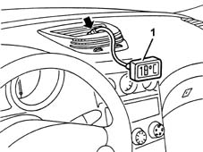
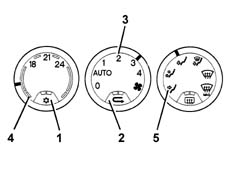

5040A Checking operation of air conditioner (temperature)
- Path
- Test > 50 AUXILIARY UNITS > 5040 AIR CONDITIONING CASING AND COMPONENTS > 5040A Checking operation of air conditioner (temperature)
- Kind
- test / check procedure
- Applies to
- engines: 1.6 TS , 1.8 TS, 2.5 V6, 1.9 JTD 8v , 2.4 JTD 10v; all production periods
- Interactive page
- https://sloeber94.github.io/elrnDB-a156/en/#/3239172
Applies to: engines: 1.6 TS , 1.8 TS, 2.5 V6, 1.9 JTD 8v , 2.4 JTD 10v; all production periods
Close all the doors and windows.
Position the gear lever in neutral.
Start up the engine and keep it running at 1250 - 1300 rpm.
Open the centre vents and place a temperature sensor inside.

Switch on the air conditioning (A/C button pressed and LED on).
Switch on the recirculation (button pressed and LED on).
Place the fan speed selector in position "2".
Place the temperature selector in the maximum cold position.
Place the distributor selector in the "frontal" position.

Check that within 2 - 4 minutes the temperature reading is 8 - 12° ?.